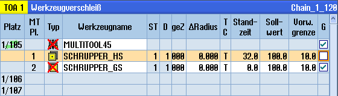

Multitool und auf dem Multitool befindliche Werkzeuge können unabhängig von einander gesperrt sein.
Wird ein Multitool gesperrt, dann kann man die Werkzeuge des Multitools nicht mehr über den Werkzeugwechsel einwechseln.
Wenn nur ein Werkzeug auf einem Multitool eine Überwachung einstellt hat und die Standzeit oder die Stückzahl ist abgelaufen, so wird das Werkzeug und das Multitool auf dem sich das Werkzeug befindet gesperrt. Die anderen Werkzeuge auf dem Multitool nicht.
| | Maschinenhersteller Beachten Sie hierzu die Angaben des Maschinenherstellers. |
Wenn sich mehrere Werkzeuge mit Überwachung auf dem Multitool befinden und die Standzeit oder Stückzahl läuft für ein Werkzeug ab, so wird nur dieses Werkzeug gesperrt.
Reaktivieren
Wenn man ein Werkzeug mit abgelaufener Standzeit oder Stückzahl, das sich auf einem Multitool befindet, reaktiviert, so wird für dieses Werkzeug die Standzeit/Stückzahl auf den Sollwert gesetzt und für das Werkzeug und für das Multitool wird die Sperre entfernt.
Wenn man ein Multitool reaktiviert, auf dem sich Werkzeuge mit Überwachung befinden, so wird für alle Werkzeuge auf dem Multitool die Standzeit/Stückzahl auf den Sollwert gesetzt egal ob die Werkzeuge gesperrt sind oder nicht.
Voraussetzungen
Damit Sie ein Werkzeug reaktivieren können, muss die Überwachungsfunktion aktiviert sowie ein Sollwert hinterlegt sein.
Vorgehensweise

Reaktivieren und Positionieren
Ist die Funktion "Reaktivieren mit Positionieren" konfiguriert, wird zusätzlich der Magazinplatz auf dem das ausgewählte Multitool steht, auf die Beladestelle positioniert. Sie können das Multitool austauschen.
Reaktivieren aller Überwachungsarten
Ist die Funktion "Reaktivieren aller Überwachungsarten" konfiguriert, werden beim Reaktivieren alle in der NC eingestellten Überwachungsarten für ein Werkzeug zurückgesetzt.
| | Maschinenhersteller Beachten Sie hierzu bitte die Angaben des Maschinenherstellers. |
Weitere Informationen
Weitere Informationen zu den Konfigurationsmöglichkeiten finden Sie im Funktionshandbuch Werkzeugverwaltung.